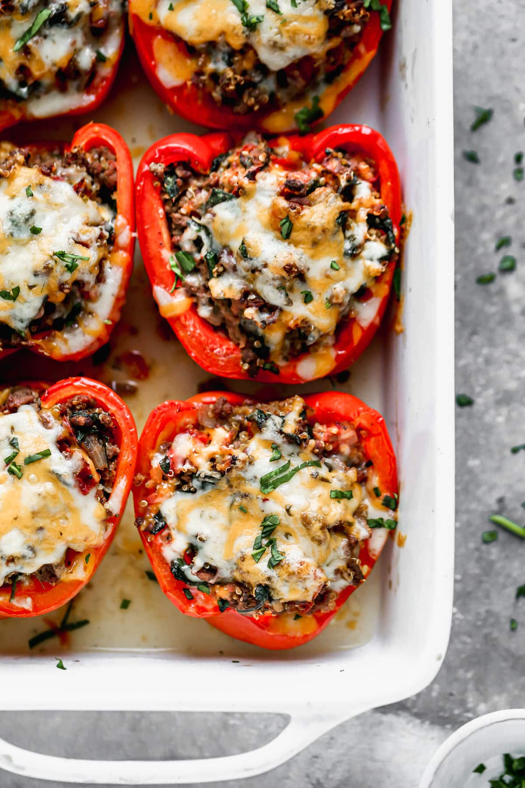

Stuffed Peppers

Classic Stuffed Peppers were one of the first “grown up” dinners I learned to cook.
Of that early repertoire, they remain the recipe I cook most, because with rice,
ground beef, cheese, and veggies, they are an all-in-one meal! Plus, they’re easy
to make AND absolutely delicious.
Ingredients
- 4 large bell peppers
- 1 pound lean ground beef
- 1 small yellow onion
- 2 teaspoons Italian seasoning
- 1 teaspoon ground cumin
- 1 teaspoon garlic powder
- ¾ teaspoon kosher salt
- ¼ teaspoon ground black pepper
- 2 cups roughly torn fresh spinach
- 1 (15-ounce) can fire-roasted diced tomatoes with juices
- 1 cup cooked brown rice
- ½ cup shredded sharp cheddar cheese
- ½ cup shredded pepper jack cheese
- For serving: chopped fresh parsley or cilantro
Home